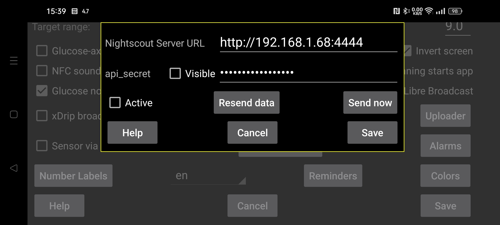

ar be de es fr hi ja nl pl ru sv tr uk uz zh en
In den meisten Fällen können Sie auch den Webserver in Juggluco oder juggluco-server verwenden. Nur wenige Apps, die lediglich die Nightscout-Webseite anzeigen, benötigen cgm-remote-monitor Sie können AAPS und AAPSClient sogar mit dem Webserver in Juggluco 7.4.1 verwenden.
Alle Stream-Werte werden im Moment ihres Eintreffens auf den Nightscout-Server hochgeladen. Wenn mehrere Sensoren verwendet werden, werden alle Werte aller Sensoren hochgeladen. Einige Garmin Watch Apps/Watchface/Widgets gehen davon aus, dass die Werte 5 Minuten auseinander liegen. Wenn sie Glukosewerte im Abstand von einer Minute erhalten, zeigen sie nur das letzte Fünftel der Kurve an. Aus diesem Grund setzt der in Juggluco eingebundene Webserver die Werte 5 Minuten auseinander, außer wenn "interval=secs" auf einen niedrigeren Wert eingestellt ist.
URL : Die URL sollte die Form https://hostname:port haben, z. B. https://myname.herokuapp.com:6789
Aktiv : Server einschalten
Test V3: Lassen Sie Juggluco api/v3 zum Hochladen auf Nightscout verwenden. Verwenden Sie es nicht zum Hochladen auf einen Nightscout-Server, der zuvor V1-Uploads empfangen hat, und senden Sie keine V1-Uploads an einen Nightscout-Server, der zuvor V3-Uploads empfangen hat. Anstelle des api_secret müssen Sie ein Access Token (Zugriffstoken) mit der Berechtigung zum Hochladen von treatments und entries angeben. Sie können eines in der Nightscout-Web-Interface unter Admin Tools erstellen.
Mengen geben: Auch Mengen als Behandlungen an Nightscout senden. Durch Berühren der Checkbox gelangen Sie zu einem Dialog, in dem Sie für jedes Label festlegen können, was es in Nightscout bedeutet. Diese Spezifikationen werden mit dem Webserver in Juggluco geteilt ( Linkes Menü→Einstellungen→Daten austauschen→Webserver ). Erst wenn alle Labels verarbeitet sind, können Sie „ Mengen geben“ ankreuzen. Wenn Sie später ein neues Etikett hinzufügen, müssen Sie selbst festlegen, was damit geschehen soll. Aufgrund eines Fehlers in Nightscout werden Einfügungen zu älteren Zeiträumen oder Löschungen erst angezeigt, nachdem Elemente mit einer neuen Zeit hinzugefügt wurden. Das bedeutet, dass es besser ist, seltener an Nightscout zu senden. Jetzt geschieht dies jedes Mal, wenn der Benutzer Juggluco verlässt, indem er das Display ausschaltet oder zu einer anderen App wechselt.
Daten erneut senden: Laden Sie alle Daten erneut auf den Nightscout-Server hoch
Jetzt senden: Normalerweise werden Daten sofort gesendet, wenn sie vom Sensor oder einer Klonverbindung ankommen. Drücken Sie auf diese Schaltfläche, wenn ein vorheriger Versuch aus irgendeinem Grund fehlgeschlagen ist.
Die WearOS-Version Juggluco 4.15.0 und höher kann auch Glukosewerte auf Nightscout hochladen. In fast allen Fällen können Sie sie besser über eine Juggluco-Version auf einem Telefon oder Tablet oder über einen Juggluco-Server auf einem Computer senden. Dadurch wird der Akku entladen, insbesondere wenn keine Verbindung zum Nightscout-Server hergestellt werden kann, sodass Sie Active besser ausschalten können, wenn keine zuverlässige Verbindung besteht.
Zwei Fehlermeldungen sorgen oft für Verwirrung.
Wenn die Fehlermeldung “upload failure:” gefolgt von nichts lautet, sind die möglichen Ursachen:
Die Netzwerkverbindung ist ausgeschaltet;
Der Hostname ist falsch geschrieben.
upload failure: java.io.FileNotFoundException: NIGHTSCOUTURL/api/v1/entries
Hier steht NIGHTSCOUTURL für die Server-URL, die nach „Nightscout-URL“ eingegeben wird.
Dies hat eine der folgenden Ursachen:
Die URL zeigt auf die falsche Site. Beispielsweise fehlt der Port nach dem Hostnamen und deshalb verbindet sich Juggluco mit einem normalen Webserver.
Das api_secret ist falsch;
NIGHTSCOUTURL enthält einen Pfad, der dort nicht vorkommen sollte. Beispielsweise lautet die Nightscout -URL https://ahost.org:8887 und Sie haben https://ahost.org:8887/extra eingegeben .